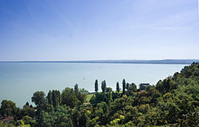

O Império Romano estabeleceu a província da Panônia na região a oeste do Danúbio. No século IV, com as ondas de migração, os hunos passaram pelas terras húngaras e estabeleceram um império que terminou em 455. Após a queda do Império Romano em 476, sucederam-se ondas migratórias de germanos, eslavos, ávaros, francos, búlgaros e, finalmente, magiares, estes no final do século IX.
Segundo a tradição, os magiares atravessaram os Cárpatos e entraram na planície da Panônia em 895 no que ficou conhecido como a conquista Húngara da bacia dos Cárpatos, sob a liderança de Árpád, o líder dos magiares que queria a aproximação com a Europa Cristã.[17] No ano 1000, o rei Santo Estêvão I, filho de Géza da dinastia dos Árpads, fundou o Reino da Hungria, ao receber uma coroa enviada pelo papa Silvestre II e sedimentou o reino em 1006, com o extermínio dos opositores crentes da fé pagã.[18]
Entre 1241 e 1242, uma invasão mongol devastou a Hungria, com grandes perdas em vidas e propriedades. Quando os mongóis foram embora, o rei Béla IV, mandou construir castelos de pedra, que seriam importantes na batalha contra os otomanos, no século XIV.
Paulatinamente, o Reino da Hungria conseguiu livrar-se das ingerências polacas, boêmias e papais, consolidando a sua independência. Matias Corvino, que reinou entre 1458 e 1490, fortaleceu o país, repeliu os otomanos e fez com que a Hungria se tornasse um centro cultural europeu durante o Renascimento.
A independência da Hungria chegou ao fim em 1526, após a queda de Nándorfehérvár (Belgrado) e a derrota para os otomanos na Batalha de Mohács.[19] O Reino foi então dividido em três partes: o terço meridional caiu sob o controle otomano e o ocidental, sob o controle austríaco. A porção oriental permaneceu nominalmente independente, com o nome de Principado da Transilvânia e sob a dinastia dos Habsburgos, que retomariam a totalidade da Hungria das mãos dos otomanos 150 anos depois, no final do século XVII.
Com o recuo dos turcos, começou a luta da nobreza húngara por autonomia no seio do Império Austríaco. A Revolução de 1848 e a posterior guerra civil eliminaram a servidão e garantiram os direitos civis, mas a revolução foi duramente reprimida pelos austríacos em 1849. Em 1867, porém, após duras batalhas internas e externas, o Império Austríaco obrigou-se a fazer reformas internas, e para evitar a independência húngara, fez um acordo na qual reconhecia o Estado autônomo da Hungria, surgindo então a chamada Monarquia Dual, ou Império Austro-Húngaro.
Durante a Primeira Guerra Mundial, a Hungria lutou ao lado da Alemanha e da Áustria. Após a derrota, o país perdeu 70% de seu território e 60% de sua população, com a assinatura do Tratado de Trianon em 1920. O país ficou sob o domínio do governo autoritário de Miklós Horthy, que se aliou à Alemanha nazista durante a Segunda Guerra Mundial. A Hungria foi ocupada pelos soviéticos em 1944 e se tornou um estado satélite da União Soviética após a guerra.
Em 1956, uma revolta popular contra o regime comunista foi brutalmente reprimida pelos soviéticos. A Hungria tornou-se um dos países mais liberais do bloco soviético, com reformas econômicas e sociais significativas.
Com 93 000 km², a Hungria é um dos maiores países da Europa Central. Suas dimensões são de 250 quilômetros de norte a sul e 524 quilômetros de leste a oeste, com 2 258 quilômetros de divisas com os sete países (Sérvia, Croácia, Eslovênia, Ucrânia, Romênia, Eslováquia e Áustria) que o cerca.
Sua população é estimada em 10 064 000 de habitantes, apresentando um decréscimo populacional desde o último censo oficial em 2001. Tal fato vem ocorrendo nos últimos anos, seguindo uma tendência de todos os países do leste europeu. A Hungria é um país mediamente povoado, apresentando uma densidade de 109 habitantes por km².
A maior cidade é a capital Budapeste, que em sua região metropolitana tem 2 550 000 habitantes. Com menor proporção, a universitária Debrecen, em Hajdú-Bihar, é a segunda maior com 205 000 habitantes. A terceira é Miskolc, com pouco mais de 179 000 habitantes, no condado de Borsod-Abaúj-Zemplén, no nordeste húngaro.
Addig jár a korsó a kútra, míg el nem törik
Tradução: A mug keeps going to the well until it breaks eventually.
A nagy hal megeszi a kishalat
Big fish eat the small fish.
Ha a hegy nem megy Mohamedhez, Mohamed megy a hegyhez
If the mountain does not go to Muhammad, then Muhammad goes to the mountain.
Ha a róka nem tudja, mit mondjon, a szőlő savanyú
If the fox does not know what to say, the grapes are sour.
| Nome e Capital | População | Idioma | Área | Moeda | |
|---|---|---|---|---|---|
| Hungria | Budapeste | Hungarian | 9 600 000 | 93 030 km² | Forint húngaro (HUF) |
| Inglaterra | Londres | Inglês | 55 000 000 | 243 610 km² | Euro |
| França | Paris | Francês | 67 000 000 | 551 695 km² | |